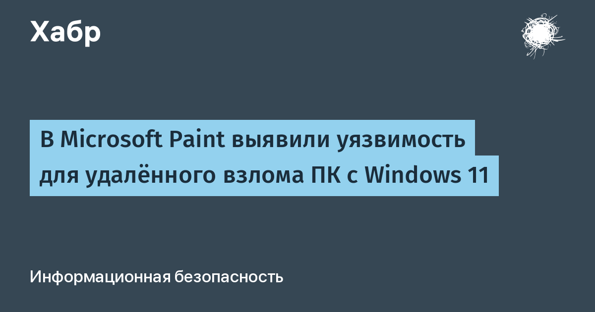

13 октября Microsoft опубликовала в Security Update Guide запись об уязвимости CVE-2026-83844 в приложении Windows Paint. Речь об ошибке типа out-of-bounds read — чтении данных за пределами выделенного буфера при разборе файла изображения. По классификации вендора вектор атаки — сеть, привилегии злоумышленнику не нужны: достаточно, чтобы жертва открыла специально подготовленную картинку. Оценка CVSS — 8,1 балла, высокая степень опасности.
Microsoft указала, что проблема исправлена в версии Paint 11.2605.91.0. Вот только найти и скачать эту версию невозможно: в Microsoft Store по-прежнему висит 11.2605.81.0. На форуме Microsoft Q&A системный администратор напрямую спросил, где взять исправленный релиз, — внятного ответа нет. Пользователи Reddit и сообществ сисадминов сообщают о том же: проверка обновлений и сброс кэша WSReset не помогают, Paint остаётся уязвимым. По отдельным сообщениям, исправление завезли пока только в страны Южной Азии, а за исправленную называют уже версию 11.2609.401.0 — сведения противоречивые.
Проверьте фактическую версию Paint короткой командой в PowerShell: Get-AppxPackage Microsoft.Paint | Select-Object Name, Version. Если версия ниже исправленной — организациям стоит временно ограничить открытие изображений из ненадёжных вложений, а на личном ПК приложение можно просто удалить: Paint выносится одной командой Remove-AppxPackage. Публичного эксплойта «в дикой природе» пока не замечено, а CISA не внесла CVE в каталог эксплуатируемых — время спокойно дождаться нормального обновления Store ещё есть.
Paint — самое «безобидное» приложение Windows, и именно поэтому дыра в его парсере изображений выглядит симптоматично: встроенные просмотрщики и редакторы получают файлы из писем, мессенджеров и браузеров, то есть сидят прямо на пути доставки вредоносных вложений. А история с «исправлением, которого нет в магазине» — напоминание, что для экосистемы MS Store выпуск заплатки и фактическое развёртывание на машинах пользователей, увы, не одно и то же.
Итог: ждём, когда исправленная версия доедет до Store; до тех пор не открываем картинки из писем и чатов в Paint и проверяем установленную версию.